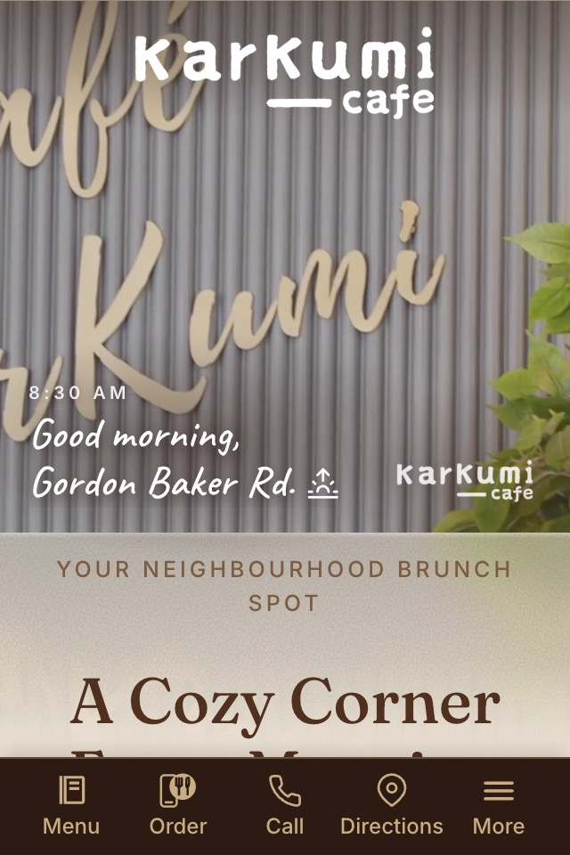
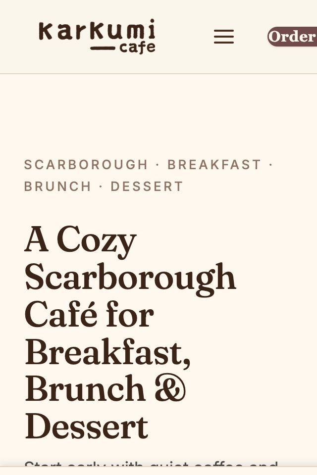

Karkumi Café
I designed and built this café's first website. When they launched a new one, they brought me back to make it easier to use.
v1 Current site · karkumicafe.com
The café's current site, which I was asked to optimize.
v2 My optimization · in development
A mobile action bar for menu, order, call and directions; a full menu with jump navigation; video hero, SEO blog and events inquiry.
- React
- Vite
- Sass (BEM)
- SEO

v2 · dev
v1 · live